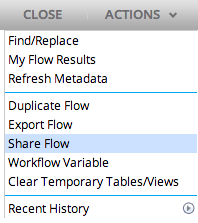
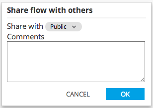

To share a flow with other users of Alpine, click Share on the Actions menu and choose a group with which to share the currently open flow.

A user can share the flow with any group of which they are a member (including Public). Select the desired group form the drop-down and click OK to share the flow.
